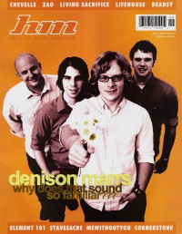

HM
|  |
Find & browse
Browse issues of HMOfficial
Online back issue publication
Worldcat
Library of Congress record
About HM
HM, originally called Heaven's Metal, started as a photocopied fanzine in 1985. The magazine was inspired by an editorial in the fanzine ACME, and the first issue featured Stryper.
Early Heaven's Metal issues could be considered as part of a group of underground fanzines supporting Christian rock music. Often made by cutting, pasting, and photocopying, this class of magazine reflected more on the honest intentions of the editors than any attempt to build a slick, viable publication.
By the late 1980s Heaven's Metal had transcended that label, morphing into a full-sized magazine with #15, and gaining retail distribution. A 1988 article in CCM compared Heaven's Metal to general market metal magazines such as Kerrang! and Metal Forces. Circulation reached 1,400 copies per issue in 1988.
With national distribution through Christian book stores, circulation had grown to 10,000 copies by the early 1990s.
In September 1995, the name changed from Heaven's Metal to HM, reflecting changes in the industry, and the general decline in the popularity of metal music. Following this, circulation peaked over 18,000.
The name Heaven's Metal was resurrected in 2004 to focus on harder elements of Christian metal and old-school bands that are still on the scene.Heaven's Metal eventually rolled back into the main publication.
The final printed issue of HM was #150, in 2011 and publication continued online monthly until mid-2015. The publication continues as a web site but no longer offers a current periodical in any form.
General info
First issue: July 1985Final issue: June 2015
Published as:
1985 – 1995, Publisher: (Austin, TX)
1995 – Present
Publisher: (Austin, TX)
OCLC: 56621413
LCCN: 96652875
Cover appearances
7: P.O.D.5: Tourniquet
4: Underoath
4: Project 86
4: The Devil Wears Prada
4: Living Sacrifice
4: August Burns Red
4: Norma Jean
4: Bloodgood
4: As I Lay Dying
3: Blindside
3: Whitecross
3: Demon Hunter
3: Bride
3: Barren Cross
3: For Today
3: Skillet
3: MxPx
Staff
Editor - Doug Van PeltManaging Editor - David Allen
Assistant Editor - Jason E Dodd
Assistant Editor - Brian Vincent McGovern
Columns & regular features
Classic Moments: Doug Van Pelt.Devotions: Greg Tucker.
Pastor Bob's Column: Pastor Bob.
So & So Says....: Interviews with general market artists about their views on Christianity and faith.
Sound Advice: Pastor Bob.
The Christian and Art: Kemper B. Crabb II.
Articles about HM:
- July 1985 in Heaven's Metal "What Is It?", by Doug Van Pelt
- September 1985 in Heaven's Metal "ad in Kerrang! brings attention to HM", by Doug Van Pelt
- 1987 in Heaven's Metal "Heaven's Metal Update", by Doug Van Pelt
- January 1988 in CCM "Heavy Metal / Magazines", by David S. Hart
- July 1992 in Heaven's Metal "Heaven's Metal: Looking Back At The First Seven Years", by Doug Van Pelt
- July 2005 in HM "History of HM magazine", by Doug Van Pelt
- April 2008 in Heaven's Metal "Meet The Editor", by Jonathan Swank
- July 2010 in HM "HM Magazine: 25 Years In Authority", by Nathan Doyle
- September 2010 in Heaven's Metal "25 Years of Heaven's Metal", by Jonathan Swank
- February 2012 in Down The Line "A Letter from Doug Van Pelt", by Doug Van Pelt
- March 2013 in HM "HM Back Page: HM For Sale by Owner", by Doug Van Pelt
- March 2013 in HM "HM Magazine Breaks Up", by Doug Van Pelt